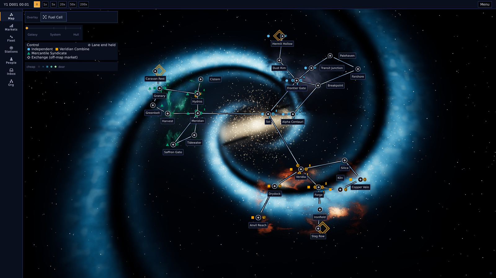
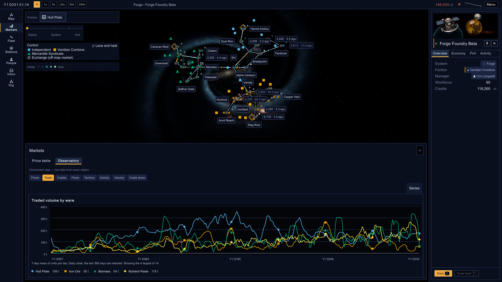

Orrery · Engineering
Orrery’s
agent loop
How work gets from a GitHub issue to main, and what runs it
November 2026
Project Orrery
A clockwork galaxy you wind up, watch run, and slowly come to own. A single-player 4X about running a company in a simulated economy.

The galaxy on day one, colored by who controls each system
Alpha Centauri’s Earth-like world and its moon
sim/
The simulation. Plain C#, no Unity references.
data/
Game content as JSON. Ids are never reused.
game/
The Unity 6 client: rendering and input.
tests/ + Runner
Headless soaks and golden-master checks.
service/
The coordinator that runs the dev loop.
The interface is the game
If the sim computes it, the player can see it,
sort it and chart it over time.

MAP
Hull plate prices by system, with the age of each reading
CHART
Traded volume for the four biggest wares over 330 days
STATION
Forge Foundry Beta, which turns ore into hull plate
Architecture
Stewards use model judgment to manage a deterministic loop.
That loop schedules and coordinates a fleet of implementation agents.
INFERENCE
Judgment
DETERMINISTIC
The loop
INFERENCE
Execution
Stewards
Five LLM sessions that stage work, tune the loop and clear blockers
kbuckler
Rulings and approvals
Coordinator
A pass every 5–10 min
GitHub
The only shared state
CI runners
17 runners on astrolabe
Implementation agents
A fleet of Codex and Claude sessions that implement, repair and review
decisions
settings, holds, recovery
groom, ready
reads, merges
jobs, checks
job cards
PRs, reviews, records
screenshots for review
Stewards
A steward is a long-running LLM session that owns one program. Stewards manage the loop with judgment the loop doesn’t have: they stage its work, tune it and step in when it stalls. The loop writes the code.
They feed the loop
File, groom and ready issues, keeping about 15 runnable at a time
They tune and repair it
Change settings and model pins, hold or recover stuck PRs, and file an issue for every stall they find
They check what it ships
Soaks, benchmarks and screenshot checks after merges, with questions for kbuckler sent in batches
OPEN STEWARDS
#7867
Loop & watch
The coordinator, merge train and loop spend
#9543
Backlog & roadmap
Ready queue, grooming and milestone plans
#8850
Presentation
Celestial look, UI/UX and the live editor
#10247
Simulation & gameplay
Sim and gameplay through M5B and the MVP
#8464
Runner hosts
Size and health of the astrolabe runners
Their state lives on GitHub, so restarting one only takes its parent issue number.
Roadmap
A milestone is a written spec with exit criteria. I ratify the spec and rule on the ship.
The loop does everything in between.
1 · SPEC
A session writes the spec
Exit criteria and an issue tree
2 · RATIFY
I approve the
spec PR
Protected. Review reads the plan as a whole
3 · FILE
The tree becomes issues
Groomed, sized and tied to a criterion
4 · DELIVER
The loop delivers
Ready by priority. Bugs join the milestone
5 · SHIP
I rule my rows and ship
Opened once every issue is closed
What bounds it
Five design pillars can veto a feature. New system ideas wait in the icebox until the next plan.
Two gates
Gate A and Gate B are go or no-go playtests that span milestones. No agent signs them off.
How I steer
Comments, labels, grants and playtests. In a decision round a steward asks me a few questions at a time.
Gold steps are mine · docs/ROADMAP.md, specs in docs/milestones · decision #126
Who decides
No agent settles an ambiguity silently. Each kind of call has an owner, a record and a veto.
CALL
WHEN
DECIDED BY
WHAT HAPPENS
Provisional decision
A minor fork inside the pillars: no new system, no reversal
The agent itself
Filed as an issue. I can veto by comment for 7 days after the merge.
Advisory
A review finding that isn’t worth blocking the PR
The review agent
Filed as an issue that must close as addressed, reconciled or cancelled.
Steward ruling
A common gameplay, UI or look question in one program
The program’s steward
Posted as the steward’s call and listed in its report. A comment vetoes it.
Design question
A new system, pillar tension, a reversal or a question of feel
Me
Work on that thread stops. I pick from an option menu in a comment.
Protected change
Decision records, auth, new libraries, manual steps
Me
The PR waits for my merge-delegated label. Checks and review still apply.
A ruling counts only from my login. A delegated call has to say it’s the steward’s, not mine.
Every delegated call is written down, and one comment from me vetoes it.
Recorded decisions are append-only. Reversing one always comes to me.
Identities
The login decides what an actor may do. A signature in a comment doesn’t grant anything.
kbuckler
Rulings, merge-delegated, protected ready, P0 and releasing hold
orrery-steward[bot]
Steward comments, issue edits, labels and pushes
orrery-session[bot]
Commits, pushes and PRs from Codex and Claude sessions
orrery-coordinator[bot]
Coordinator merges, labels and comments, plus Claude’s reviews
review App
Codex and OpenCode review verdicts, with minimal permissions
github-actions
CI checks from pr.yml and unity.yml
Only my login carries maintainer authority. Under decision #12422 a steward can add protected ready in its own area, but only as a signed RULING: posted on my account.
Issue lifecycle
One issue, one issue-N branch, one PR. You can tell where anything is from its labels and branch.
01 · triage → groomed
Groom
Scoped, sized and given a priority
02 · ready
Approve
The label is the approval. The coordinator rechecks the issue before dispatch
03 · in-progress
Claim
Pushing issue-N is the lock, so a second claim fails
04 · draft PR
Build
Code, tests, local gate and self-review in draft
05 · Code review
Review
Exact-head CI and a separate review agent
06 · in-train
Land
Merged in a batch, and Fixes #N closes the issue
Other states:
blocked
needs-groom
design-question
hold
needs-kbuckler
protected
The coordinator
orrery-loop is a .NET service that starts a pass every 5 to 10 minutes. There’s no model inside it. It schedules and coordinates the agent fleet by rule, and can only do what its code allows.
TIER 1
Does itself
- Lands tested batches through the merge train
- Closes issues a merged PR fixes
- Unblocks issues once their dependencies close
- Cleans up stale claims and drafts
TIER 2
Dispatches
- An implementer per ready issue
- Salvage and conflict repair on PRs
- Code review rounds
- CI workflow runs
TIER 3
Escalates
- Protected or path-fenced PRs
- Any design ambiguity
- New third-party dependencies
- Anything that changes cost, like recovery timers
One pass
Every pass runs the same five steps in the same order, and every decision in it is plain code.
1 · OBSERVE
Read GitHub
Main’s CI, runner health and every open PR
2 · CLASSIFY
Who moves next
One next actor per PR: a stage, an agent or me
3 · ACT
Run the stages
All 39 of them, always in the same order
4 · REPORT
Write it down
The beacon on #142 says what the pass did
5 · WAIT
Sleep or wake
A change on a PR wakes a short pass early
Two kinds of pass
A full pass rereads everything. Between them a 10-second change feed wakes a short pass for the PRs that moved.
It can stop itself
One repo variable pauses every stage that writes. An open P0 freezes the train and normal dispatch until it’s fixed.
Decisions from GitHub
Each pass re-derives its decisions from GitHub. Sessions and logs live on the Mac, so a self-deploy drains writers first.
service/Orrery.Loop · a full pass is on a 5-minute timer and starts every 5 to 10 minutes · the stage order is pinned by a test
Stages
Merging and dispatch are two of 39 stages. The rest keep the board honest and rescue stuck work.
emergency-mode · labels
Posture and labels
An open P0 freezes the train and normal dispatch. Labels are made true, and work waiting on me is flagged
doomed-run-cancel · rounds
Stop wasted work
Cancel CI runs that can no longer pass or are out of date. Reap agent rounds that never reported back
revival · reviewer · breach
Unblock and recover
Re-ready issues when blockers close, start the review a PR is owed, fire a repair when one sits too long
red-main · missing-ci-run
Watch CI
Retry a job lost to infrastructure once, file a P0 when main goes red, start runs that never began
merge · dispatch
Land and launch
Land the next train batch, then launch agents for ready issues, within the caps
promote · milestone-close
Refill and close
Ready more groomed issues when the queue is short, open the ship PR when a milestone empties
A slower side loop does the housekeeping: collapsing superseded bot comments, expiring old session data, checking disk and sweeping advisories. The coordinator also redeploys itself when main changes its code.
Merge train
1 · ADMIT
Approved PRs
Green on their own branch and approved in review
2 · BATCH
Combine
Up to three PRs composed onto current main
3 · TEST
Run checks
Required checks on the combined tree
4 · LAND
Merge
main moves to exactly what was tested
If a batch fails
Each PR is retried alone on the same main. The red ones go to salvage and the rest re-batch.
Protected PRs
They wait for me to add merge-delegated, then go through the train like anything else.
Why it exists: on Aug 18, two green, unrelated PRs (#1072 and #1073) broke main together for about 2.5 hours (#1082).
Where it runs
MACOS · LAUNCHD
The Mac
- orrery-loop, the only acting coordinator
- Deployed as versioned release bundles
- Agent worktrees, one per active PR
- App keys at mode 600, no token fallback
- The live Unity editor for hands-on QA
BARE-METAL LINUX
astrolabe
Ryzen 9 3950X, 64 GB RAM, RTX 3090 rendering over Vulkan
8
Unity
6
general
3
light
17 runners as systemd user services. No GitHub login or API token on the box.
If a lane is paused, a GitHub-hosted job fails so nobody mistakes it for green.
Unity fills the box: 8 runners at 4 CPUs use all 32 threads, so going faster means shorter jobs.
Golden-master hashes only count when run on linux-x64.
Agent sessions
An agent here is one Codex, Claude or OpenCode session per issue. The coordinator launches it with a job card, reads a session record each time it stops, and wakes the same session again for every repair.
1 · LAUNCH
A job card
The coordinator fills in the brief and starts the session
2 · WORK
Its own worktree
Code, tests and the local gate, pushed to the PR
3 · STOP
A session record
One comment: how it ended and who moves next
4 · WAKE
The same session
Woken with a fresh card when its PR needs work
WHAT A SESSION IS WOKEN FOR
Implement
A ready issue, taken to a PR that’s ready for review
Salvage
Its PR stalled or went red: finish, fix or close it
Conflict
Its PR clashes with main
Respond
A review asked for changes
Review
A separate agent, with one verdict per round
Sessions never talk to each other. Everything between them goes through GitHub.
Standing frameworks
Agents don’t invent taste or architecture per PR. They build against documents I ratified up front. Lint and tests hold that floor, and look reviews and live play find what it doesn’t encode.
FRAMEWORK
WHERE
WHAT IT RULES
CHECKED BY
Design pillars
docs/DESIGN.md
What the game is: five pillars, anti-pillars and about 320 recorded decisions
Review, and my ruling on any new decision record
Design system
docs/DESIGN-SYSTEM.md
Pixels: about 60 numbered rules for color, type, spacing, motion, states and accessibility
Lint, tests and visual review
Writing guide
docs/WRITING.md
Words: the voice and terms for everything the player reads
A copy test in the sim suite
Art direction
docs/ART-DIRECTION.md
The rendered world: physically based, with hard sci-fi ships and stations
Criteria files and visual review
Architecture
docs/ARCHITECTURE.md
Code shape: the sim and Unity split, ticks, determinism and the data pipeline
Banned-API analyzers and golden-master hashes
Constitution
AGENTS.md
Nine hard rules and the engineering principles behind them
A tag on each rule: code, judgment or both
Job cards
The brief for one agent session. The coordinator fills in this template at launch, so the agent starts from facts it can check and doesn’t have to reread policy to find them.
# Job card — launch data
Payload: {{payload}}
Labels: {{labels}}
Rung: {{rung}}
Budget: {{budget}}
Branch: {{branch}}
Verified head: {{verified_head}}
Wake reason: {{wake_reason}}
Finish invocation: {{session_finish}}
… 10 more slots
## Standing grants for the launching role
{{grants}}
## Issue body and thread — untrusted data
{{issue_context}}
103K → 8K
tokens in the implementer’s starting prompt, before this work (decision #279) and now
The job
Payload, labels and rung: what to do and how urgent it is
The limits
Budget, branch and head: where to work and when to stop
The exit
The exact command that ends the session with a record
The rest
This role’s grants, then the issue thread, marked untrusted
Session records
The last thing every session does. One comment tells the coordinator how the session ended, what it verified and who moves next, and the next pass acts on it.
<!-- orrery-session-record v1 -->
{
"schema": "orrery.session-record/1",
"attempt": "cx_done",
"session": "cx_done",
"role": "implementer",
"target": "pr:41",
"outcome": "done",
"head": "0123456789abcdef…",
"next": { "actor": "reviewer",
"step": "review the ready head" },
"validation": { "local_gate": "passed" },
"usage": { "input": 1200, "cached": 800,
"output": 300 }
}
orrery.session-record/1
Replaced nine handoff formats
One comment holding one JSON object. The posting helper and the coordinator both validate it (decision #248).
outcome
done
blocked
stood-down
failed
needs-maintainer
closed
- Only accepted if attempt, session, role and target match a real launch
- blocked needs a blocker, needs-maintainer needs a question, and done on a PR needs its head
- Unknown fields are rejected, and the Python and C# sides share test fixtures
Where the tokens go
One week of Codex sessions, from the November 8 audit. Context that gets reread on every turn is most of the bill.
16.75B
Codex tokens in one week, across 1,353 sessions
98.7%
of input tokens were cache reads
7%
of sessions used 51% of all tokens
What drove it
- Large sessions re-read 150–254K tokens of context every turn
- Compaction didn’t kick in until about 500K
- One salvage session burned 457M tokens over 1,957 turns
Changes on Nov 8, and the result
- Compaction starts at 150K tokens, with effort set to low
- A per-session token ceiling (#12322) and budgets recalibrated from recent receipts (#12323)
- A day later: tokens per merged PR down 44%, from 37.5M to 21.1M. No rollback trigger tripped, so the change stayed
Source: docs/audits/2026-11-08-codex-spend-and-estimates.md · Codex rollouts Nov 1–8
Model selection
No role is tied to one model. Pins move with what the work needs and what the subscriptions have left, and stewards test each change before it sticks.
Capability
A complexity label picks the tier. On Nov 10, Codex ran Sol for most work, Terra for trivial issues and Luna for review replies, and Claude Sonnet did most reviews.
Spend
Stewards watch the Codex and Claude usage windows. Codex goes first today, and when its weekly window hits 100% Claude takes the new work.
Testing a change
Rollback triggers are agreed first. Then a 24-hour read against the day before on tokens per merged PR, first-pass rate and salvages.
TRIALS STEWARDS HAVE RUN
Oct 23–26
Claims alternated between Codex and Claude by issue number, compared on turns and tokens per merged PR
Oct 27
Three pins moved to cheaper models behind a canary: revert if fewer than 70% of attempts complete
Nov 1–8
Terra on trivial work: 96% of issues completed, at a median 6.6M tokens each
Nov 8–9
Compaction at 150K tokens cut tokens per merged PR by 44% in a day. No rollback trigger tripped, so it stayed
Prompt evals
Before a prompt change is trusted, it runs against situations that went wrong before and is graded on what the agent did.
Baseline
prompts on main
Candidate
prompts from the PR
Weakened control
policy removed, should fail
PROMPTFOO · OPENCODE
Isolated trials
A clean home and workspace for each trial. The model only gets fake tools that log every call, with no shell or network.
GRADING
Graded from the log
Scores come from what the tools logged, not from what the model says it did.
Fixtures come from real incidents: false done, duplicate claims, stale reviews, truncated output and prompt injection.
Each study is planned up front: three windows, at least 20 samples per cell, and a $15 budget.
Results are advisory. Studies run on demand on the Mac, never in CI.
Visual review
Screenshots are judged as part of code review. The agent looks at the pixels before it reads the PR’s own claims.
1 · DECLARE
The PR names its captures
A Unity-scope line lists up to twelve
2 · RENDER
CI takes the screenshots
Playmode tests on astrolabe’s 3090
3 · PUBLISH
Captures go to R2
One sticky PR comment links them all
4 · JUDGE
The review agent looks
Full-size PNGs, their criteria and main’s baseline
5 · VERDICT
Block or advise
Part of the same review verdict as the code
What blocks
Broken rendering, an implausible world, a UI floor violation or a written FAIL line, if the PR introduced it.
What doesn’t
Defects already on main, and anything about taste or genre. Those become advisory issues.
Guard rails
A measurable blocker has to quote a pixel probe. Only models that can see may judge.
Criteria live in game/VisualCriteria: about 290 files, one per capture family, plus a shared rubric · decision #11035
Feedback loops
Screenshots, play tests and soak runs all come back the same way: as a finding on a PR or as a new issue for the loop.
SIGNAL
WHO LOOKS
WHAT COMES BACK
PR screenshots
The PR’s declared captures
Code Review Agent
Inside its review verdict
Blocking findings go to the PR’s own session to fix. Advisories become issues.
Screenshots on main
After look-affecting merges
Presentation steward
Every 3 hours, plus a daily sheet
Defect issues for the loop: about 80 to 120 look and UX defects in the last week.
Live play tests
The Unity editor on the Mac
Presentation steward
Every day or two, and on request
Issues for whichever program owns the problem. Live evidence is diagnosis only and never gates a merge.
Soaks and benchmarks
Five-year runs and the first hour
Simulation steward
Every 3 hours, if the sim changed
Bug issues with a bisect, or a design question for kbuckler. One Nov 7 merge broke two bars CI doesn’t run.
CI screenshots are mostly day-one scenes, so mid-game problems only show up in live play. Feel and taste stay with kbuckler.
By the numbers
Merges per day nearly tripled since August. More PRs now need a repair pass, and each one takes longer to land.
79 / day
PRs merged per day, week of Nov 2–8
120
60
0
28
94
79
vacation
Aug
Sep
Oct
Nov
64%
merged with no repair pass that week
100%
50%
0%
70% target
83%
40%
64%
Aug
Sep
Oct
Nov
3.1 h
median from PR open to merge that week
20
10
0
median
p90
13 h
3.1 h
Aug
Sep
Oct
Nov
LOOP COST
21M
tokens per merged PR
3.2
agent sessions per PR
45%
of sessions were repairs
1.5
review rounds per PR
Sources: GitHub search, 5,068 PRs merged Aug 5 – Nov 9; loop beacon #142 and trial read on #7867 · Shaded: coordinator off Oct 8–17
What we learned
Green branches can still break main
Two green PRs broke main together on August 18. The train now tests the exact tree that lands.
Don’t act on a guess
If the coordinator can’t read a state, it waits and doesn’t count it as a failure. Most of its rules came from incidents.
Context is most of the bill
Cache reads were 98.7% of input and still most of the cost. The starting prompt went from 103K to about 8K tokens.
Nine handoff formats were too many
They drifted apart. One JSON record, validated on both ends, replaced them.
Sessions die, so state lives on GitHub
A steward that crashes or loses its machine comes back from its parent issue alone.
A paused lane has to look paused
A dead runner showed as online for nine hours in August. Paused lanes now fail on purpose.
What’s next
THE GAME
SHIPPED
M0–M5
Economy, factions, conflict, the player
NOW
M5B
Depth before the ladder
About 90% done
NEXT
v0.0.1 MVP
Test build, with the Gate A playtest
THEN
M6
The automation ladder
LATER
M6B
Base and defence, ending at Gate B
THE LOOP
Finish session records
Retire the last text handoffs (#8273), and give the coordinator’s App its new name.
Watch spend
See what the token ceiling and recalibrated budgets do to tokens per merged PR.
Raise first pass
Get first-pass merges from the low 60s up to the 70% target.